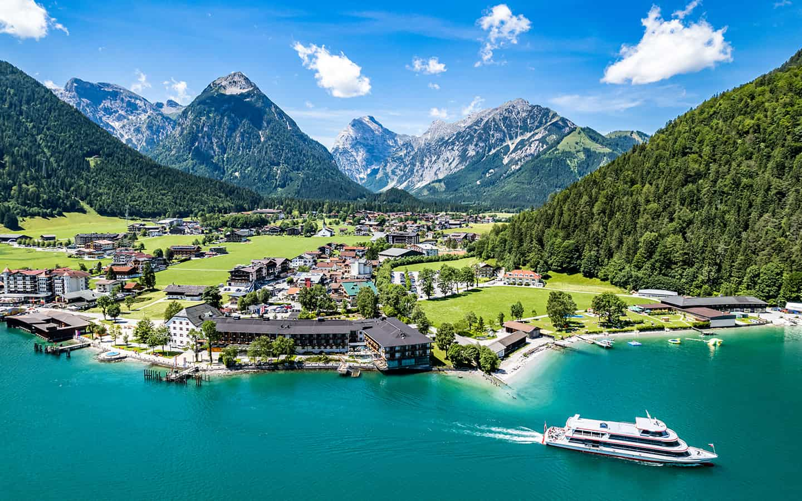

Österreich ist nicht nur das Land der Berge sondern auch der Seen. Mehr als 25.000 stehende Gewässer gibt es laut Landwirtschaftsministerium, im Sommer sind viele beliebte Badeplätze. Doch der freie Zugang zu dem kühlen Nass - vor allem bei den 62 großen Seen (über 50 Hektar) - ist nicht immer leicht. Der Wörthersee etwa ist mit über 80 Prozent fest in privater Hand, der Bodensee hingegen ist für alle da.
Die Österreichischen Bundesforste (ÖBf) bewirtschaften rund 70 Prozent aller Seen in Österreich. Die zehn größten Seen der ÖBf sind Attersee, Traunsee, Wörthersee, Millstätter See, Wolfgangsee, Ossiacher See, Hallstätter See, Weißensee, Grundlsee und Fuschlsee. Laut Bundesforstegesetz sind "die Seen und Seeuferflächen im Eigentum des Bundes zu erhalten. Das heißt die Bundesforste verkaufen weder Seen noch Seeufergrundstücke." Besonders auf den freien Zugang zu den Seen sei "Bedacht zu nehmen", heißt es. Allerdings sind viele Seeuferflächen seit Generationen in Privatbesitz.
Die Problematik des freien Zugangs zu den Seen in Österreich ist durch den hohen Anteil von Privatbesitz an den Uferflächen besonders ausgeprägt. Wie bereits erwähnt, sind mehr als 80 % des Ufers des Wörthersees in privater Hand, was bedeutet, dass der Zugang zu vielen Stellen des Sees eingeschränkt ist. Auch an anderen beliebten Gewässern wie dem Wolfgangsee und dem Ossiacher See ist der freie Zugang oft schwer zu finden, da dort ebenfalls große Flächen von privaten Besitzern kontrolliert werden.
Dennoch gibt es in Österreich Bemühungen, den Zugang zu Gewässern für die Allgemeinheit zu verbessern. Die Österreichischen Bundesforste (ÖBf) setzen sich dafür ein, den öffentlichen Zugang zu den Ufern der Seen zu gewährleisten, indem sie Naturbadeplätze an vielen größeren Gewässern anbieten. Diese Bereiche sind nicht nur für die Erholung der Menschen wichtig , sondern auch für den Schutz der Natur und den Erhalt der lokalen Ökosysteme.
Ein Beispiel für diese Bemühungen sind die Naturbadeplätze an Seen wie dem Wörthersee, Millstätter See und Traunsee, die von den Bundesforsten verwaltet werden. Diese Plätze bieten den Menschen die Möglichkeit, das kühle Nass zu genießen, ohne die Naturlandschaften und die Rechte von privaten Eigentümern zu gefährden.
Trotz der positiven Entwicklungen bleibt jedoch festzuhalten, dass der freie Zugang zu den meisten großen Seen in Österreich weiterhin durch private Besitzverhältnisse und lokale gesetzliche Regelungen eingeschränkt ist. Dies führt immer wieder zu Diskussionen über den "Recht auf Zugang" und die Notwendigkeit, öffentlich zugängliche Naturbereiche zu schaffen.
In den letzten Jahren gab es immer wieder Initiativen und politische Diskussionen, wie der Zugang zu den Seen in Österreich verbessert werden kann, insbesondere in Bezug auf die Nutzung der Uferflächen. Dies betrifft nicht nur die Badeplätze, sondern auch die Möglichkeit, an den Seen spazieren zu gehen oder die Natur zu genießen.
Insgesamt ist der freie Zugang zu Österreichs Gewässern also ein komplexes Thema, das sowohl private als auch öffentliche Interessen miteinander in Einklang bringen muss. In vielen Fällen müssen auch die Rechte der Eigentümer beachtet werden, während gleichzeitig der Anspruch auf die Nutzung der natürlichen Ressourcen für die breite Bevölkerung sichergestellt wird.